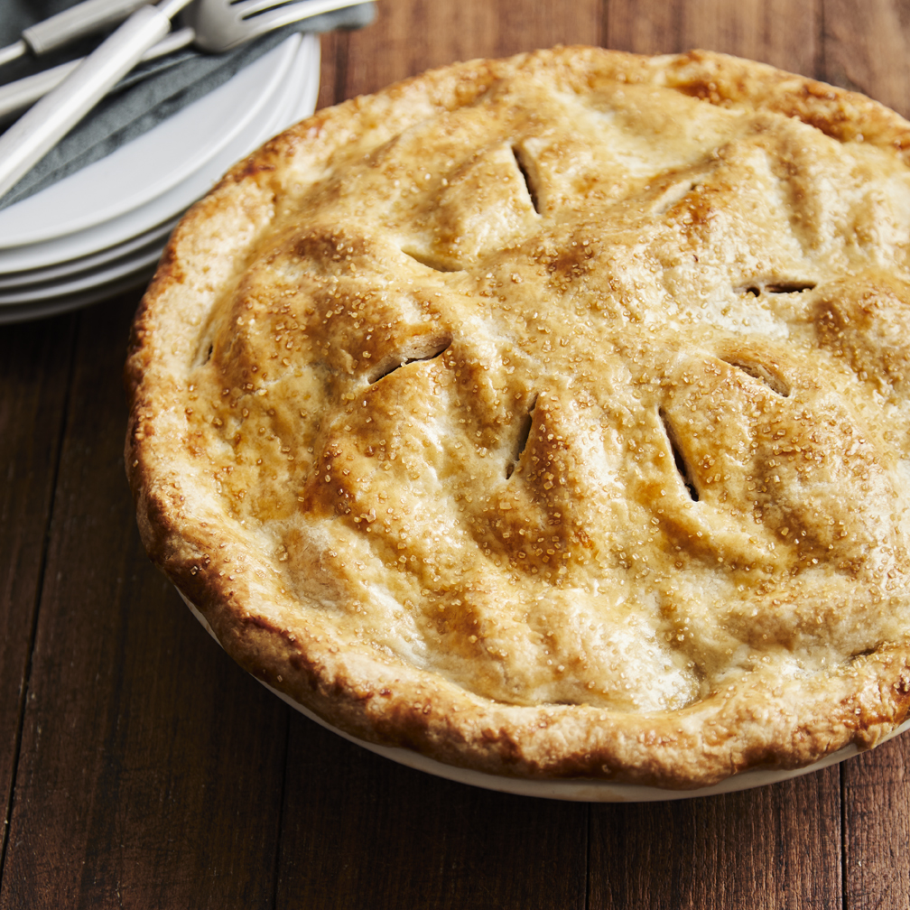

Salted Caramel Apple Pie!

Description
This salted caramel apple pie has everything you'd want out of an apple pie: a buttery, flaky crust; a spiced apple filling; and a sweet, salty caramel sauce that team up to provide a perfect combination of flavors and textures in every bite. Serve à la mode with a side of vanilla bean ice cream.
Ingredients
- 2 ⅓ cups all-purpose flour
- 2 ¼ teaspoons kosher salt
- 1 ½ cups cold unsalted butter, cut into 1/2-inch cubes
- ½ cup ice cold water, divided
- 1 cup white sugar
- 6 tablespoons salted butter, cut into 1/2-inch pieces, at room temperature
- ½ cup heavy whipping cream, at room temperature
- 1 ½ teaspoons fine sea salt
- 10 medium Granny Smith apples - peeled, cored, and sliced
- ½ cup white sugar
- ¼ cup all-purpose flour
- 2 tablespoons fresh lemon juice
- 1 tablespoon cornstarch
- 1 ½ teaspoons ground cinnamon
- ¼ teaspoon kosher salt
- ¼ teaspoon ground cloves
- ¼ teaspoon ground nutmeg
- 1 large egg, beaten
- 1 tablespoon turbinado sugar
Steps
- Make the pie crust: Whisk flour and salt together in a large bowl. Add butter and toss until pieces are completely separated and coated with flour mixture. Using your hands, work butter into the flour mixture until well combined and butter pieces are no larger than a pea.
- Gently stir in 1/4 cup cold water with a spatula until completely absorbed. Add remaining 1/4 cup water, 1 tablespoon at a time, gently stirring between each addition, until dough begins to form into a ball. Depending on how humid it is in your kitchen or how hydrated your flour is, you might not need to use all of the water.
- Transfer dough to a clean work surface and gently knead, being careful not to overwork it, until smooth and slightly tacky. Divide dough evenly into 2 pieces. Form each piece into a flat disk and wrap individually in plastic wrap. Chill dough in the refrigerator for at least 1 hour or up to 3 days.
- While the dough is chilling, make the caramel sauce: Heat sugar in a small saucepan over medium heat, stirring occasionally, until completely melted and amber in color, 10 to 15 minutes. Add butter to melted sugar and cook, stirring constantly, until butter is melted and completely combined, about 1 minute.
- Carefully add heavy cream to sugar mixture, stirring constantly, until bubbly, 15 to 30 seconds. Remove saucepan from the heat and stir in sea salt. Set caramel sauce aside to cool slightly at room temperature until ready to use.
- Make the filling: Stir apples, sugar, flour, lemon juice, cornstarch, cinnamon, salt, cloves, and nutmeg together in a large bowl until well combined. Set apple mixture aside at room temperature, uncovered, for 30 minutes.
- Pour apple mixture through a strainer into a large bowl. Set apple mixture aside, and transfer the strained liquid to a small saucepan. Bring liquid to a boil over medium heat, stirring occasionally, until thickened. Remove saucepan from the heat and set aside at room temperature.
- Preheat the oven to 400 degrees F (200 degrees C). Position an oven rack in bottom third of oven.
- Working with one dough disk at a time on a surface lightly dusted with flour, roll each disk into a 1/8-inch thick circle that measures 12 inches in diameter. Place one dough circle in a 9-inch pie pan and gently press dough into the corners and sides of the pan.
- Stir together apples and reduced apple liquid in large bowl; arrange apple mixture in the pie crust, and drizzle with 1/2 cup of the caramel sauce. Place remaining dough circle over top and press into apple mixture and into edges of pan. Using your fingers, fold the edges under and crimp to seal. Brush the top and edges of dough with beaten egg and sprinkle with turbinado sugar. Cut eight 1-inch slits in the dough with a sharp paring knife to allow steam to escape. Place pie on a rimmed sheet pan.
- Bake pie in the preheated oven until the top is light golden in color, about 20 minutes. Without removing the pie, reduce the oven temperature to 375 degrees F (190 degrees C), and continue baking until dough is deep golden brown and filling is starting to bubble, about 25 minutes. Gently cover pie with aluminum foil, and continue baking until a knife inserted in the center comes out mostly clean, about 25 minutes.
- Remove pie from the oven and transfer to a wire rack to cool completely, about 2 hours. Serve pie with remaining caramel sauce, if desired.